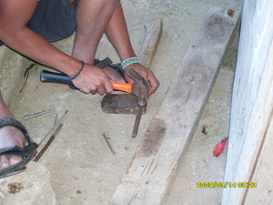

lansang 
/lansaŋ/
n.
“nail”
n.
metal nail
Wrd.Gloss: nail
Syn. pansal
Eng. nail
Tag. pakò
Ceb. lansang
Ilo.: lansa
OCM: Miscellaneous Hardware (414)
Online dict status: -
Usage level: L
v.
for someone (eglansang, miglansang/inlansang, agent, eg><ø-) to hammer in a nail (iglansang, inlansang, instrument, ig><ø-) something (eglansangan, inlansangan/miglansangan/piglansangan, eg><an-)
Eglansangan te amey ku ka haheran ney su mahaan e egkahuhus.
My father hammer in a nail of our stair because it almost broken.
Eng. hammer in
Online dict status: -
Usage level: L
v.
(iglansang, ig><ø-) to crucify
Eng. crucify
Online dict status: -
Usage level: L
v.
for someone (egpanlansang, impanlansang/migpanlasang, agent, egpaN-) to keep on hammering in a nail
Egpanlansang sikandin te alabat din.
He is hammering a nail in his wall.
Eng. keep on hammering in a nail
Online dict status: -
Usage level: L
v.
for something (egkalansangan, nalansangan, theme, egkA><an-) to be capable of hammering in a nail
Eng. capable; good; soft
Online dict status: -
Usage level: L
Updated by: RJH,QDL
Last updated: 03/Feb/2010
"inlansangan" in song "Ke egpalemlemen ta ka krus"
"inlansang" in song "Ware duma, si Hisus de"
"peglansang" in song "Matulus ka Kristu"
This page last updated: 28-Dec-2019
Copyright © 2009-2014, Matigsalug Language Christian Association, Inc